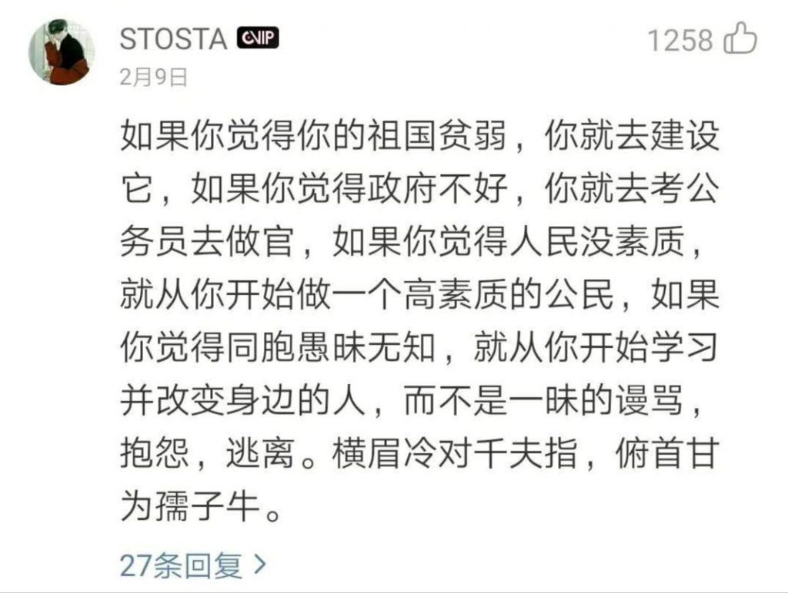

评论｜勿用「做最好的自己」来逃避政治
按照一般社会生活经验，每逢极富争议的重大事件发生后，总是会有人跳出来让大家「保持理性，不要被别有用心之人带了节奏」。仔细品一品这句话，不妨问问自己什么叫「保持理性」。
说这话的人，肯定是为了反对某种行为而说的，那么这种被他们所反对的行为，自然就是不理性的。比方说，医生喊冤，别人帮着他喊冤，有论者就要说，请大家保持理性，不要被别有用心之人带了节奏。潜台词是，别跟着喊冤就是理性。
当然论证并不止步于此，往下再细分，这种观点又有两个分支。其一是维护大局稳定派，其二是做最好的自己派。第一派是老调重弹，没什么意思，按下不表。按照第二派的观点，看到别人喊冤，跟着喊冤是没有用的，与其谩骂，不如做最好的自己，努力学习，改变社会。

不好意思，我没看清，「俯首甘为孺子牛」的前半句是什么来着？我想鲁迅作为一个因为骂政府被通缉的人，要是发现自己话被引用来支持一种犬儒的立场，恐怕棺材板都得被他掀了。试想一个情景。甲家遇到了小偷，乙很愤慨。乙说:「小偷太可恶了，天下小偷死全家」。这时丁看不下去了，说:「你不要一味谩骂，觉得小偷可恶，就从自己做起，做一个不偷东西的公民；觉得小偷多，就去考警校当警察，维护一方治安。」您猜猜乙会怎么做？
当然这个例子有失偏颇，因为现实中许多人并没有骂「小偷死全家」，而是说「小偷必须绳之以法」「还甲家一个公道」「治安管理制度亟待改革」云云，恐怕难以归入「谩骂」行列。不过举重以明轻，能适用于「谩骂」的道理，自然也能适用于其他「负面言论」。
当我们看到有人说「不要……而要……」的时候，就得留个心眼。这种「你要做A而不是B」的命题，预设了「A和B不能同时做」这个前提。然而真的是这样吗？具体而言，我能不能一边「做最好的自己」，一边「一味谩骂」？显然两者并不冲突。我可以用学习时间来做最好的自己，用课余时间上微博骂两句。当然，要是有人全职在微博上谩骂，不干别的事，那么或许这种人是应该听一听上面博主的建议。
进一步说，被替代的B是否如有论者宣称的那样无用，也是需要玩味的。在这个例子中，发表「负面言论」的行为被统一定性为「谩骂、抱怨」（当然后面还有个「逃避」，暂时不讨论）。这种定性无疑是有问题的，像诸如「还甲家一个公道」「治安管理制度亟待改革」等言论，不仅不是纯粹的负能量，反而具有建设性价值。即便是单纯的「谩骂」，反映的也是公众情绪，而这种情绪可以引起公权力的关注，进而带来改变。
至于作为替代方案提出来的A是否合理，也是存疑的。按照有关论者说法，觉得政府不好，就要去考公务员；这和觉得小偷多就要去当警察一样荒谬。依此推论，如果我不当警察，我就不能嫌小偷多；不是政府官员，我就不能觉得政府不好。此外，我要是觉得黑社会也不好，是不是还要加入黑社会去改变它？
即便真的让人去考公务员，从概率角度看，想要实现人们所希望的「改变」也是很困难的。有些事情的成败和个人能力有关，有些则和更根本的、结构性的问题有关。历史是由人民群众创造的，不是靠个别英雄创造的。关于这一点，只能说这么多。
归根结底，这种论调和鼓励我们当看客的论调并无不同。后者说，呐喊无用，只能给自己惹麻烦，既然没落到我头上，我就不去管它了；只不过前者加了一点「高贵」的动机，即今日的高高挂起是为了明日的美好改变。殊不知，如果今日高高挂起，那么期待中的「明日」便不太可能到来。
原网址: 访问
转载请注明来源，欢迎对文章中的引用来源进行考证，欢迎指出任何有错误或不够清晰的表达。可以在下面评论区评论，也可以邮件至 memo_hanabi@outlook.com
文章标题:评论｜勿用「做最好的自己」来逃避政治
文章字数:1.2k
本文作者:睡一号床
发布时间:2020-03-23, 11:36:03
最后更新:2020-04-15, 19:57:57
原始链接:https://mmspace.now.sh/do-not-use-be-the-best-you-to-escape-politics/版权声明: "署名-非商用-相同方式共享 4.0" 转载请保留原文链接及作者。